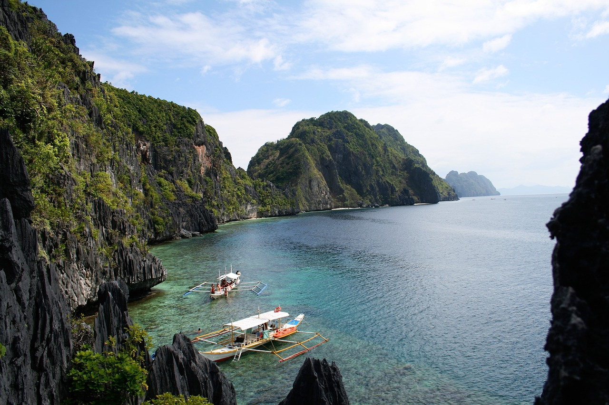
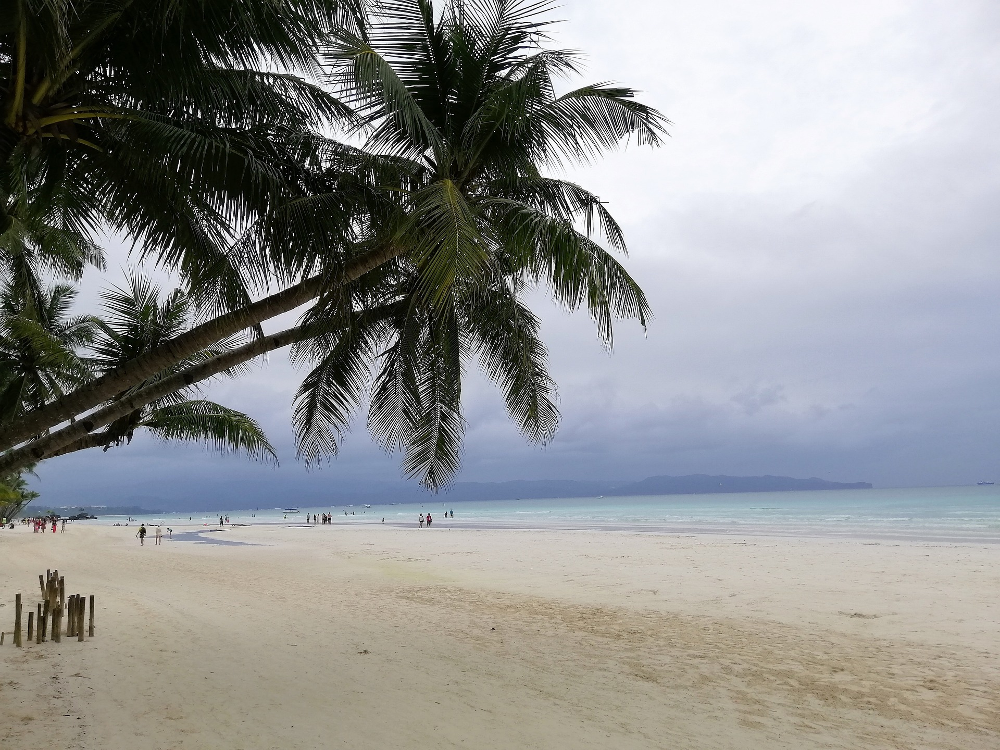

Figure 1: El Nido, located on the northern tip of Palawan Island in the Philippines, is famed for its stunning natural landscapes, including limestone cliffs, pristine beaches, and crystal-clear waters perfect for island-hopping and snorkeling. The area is part of the Bacuit Archipelago, featuring around 45 islands and islets, each offering unique attractions like hidden lagoons and vibrant coral reefs.

Figure 2: Boracay is an island paradise in the Philippines, consistently ranked among the top islands in the world. This small island, shaped roughly like a dog bone, is known for its stunning beaches, clear turquoise waters, and vibrant atmosphere.